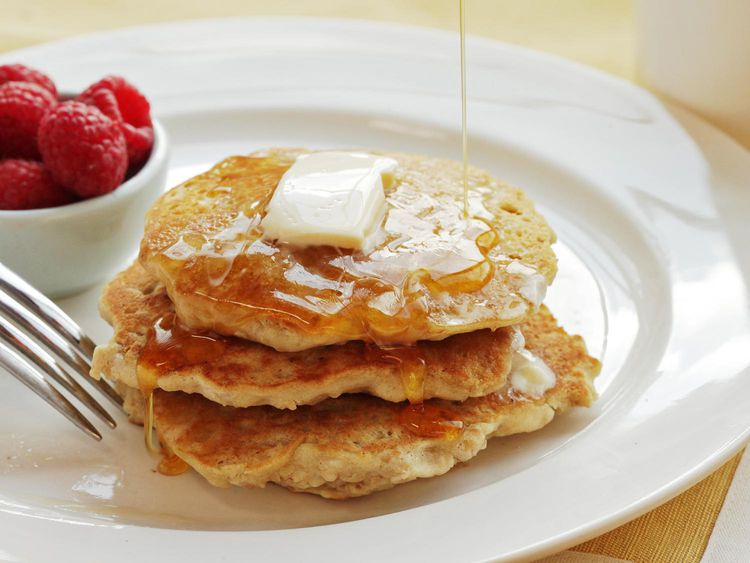

Home
Fluffy Vegan Oatmeal Pancakes

Description
Using aquafaba for vegan oatmeal pancakes is especially successful because oatmeal pancakes tend to be a little
denser than, say, buttermilk pancakes to begin with, and aquafaba doesn't have quite the lifting power and
structure that eggs do. For these pancakes, I start by toasting oats in a skillet until they're nutty and
fragrant, then I grind them up in a food processor and combine them with some standard dry pancake ingredients:
all-purpose flour, baking powder and soda, and salt. Next, I whip up the aquafaba into a dense, stable meringue
sweetened with just a touch of sugar. Nut milk, vegetable oil, vanilla extract, lemon zest, and a little vinegar
(to help with rise) make up the liquid ingredients.
Source
Ingredients
- 5 ounces rolled oats (about 3/4 cup; 140g)
- 5 ounces all-purpose flour (about 1 cup; 140g)
- 2 teaspoons (8g) baking powder
- 1/2 teaspoon baking soda
- 1 teaspoon (4g) kosher salt
- 4 tablespoons (60ml) liquid from 1 can of low-sodium chickpeas (reserve remaining liquid and chickpeas for
another use)
- 4 tablespoons (60g) sugar
- 1 1/2 cups almond, rice, or soy milk (about 12 ounces; 355ml)
- 1/4 cup (60ml) vegetable oil, plus more for cooking
- 2 teaspoons (10ml) vanilla extract
- 2 teaspoons zest from 1 lemon
- 2 teaspoons (10ml) cider vinegar or distilled white vinegar
- Vegan butter substitute and maple syrup, for serving
Method
- Heat oats in a medium skillet over medium heat, tossing and stirring frequently, until toasted and nutty,
about 4 minutes.
- Transfer to the bowl of a food processor, let cool a few moments, and pulse until about half the oats are
powdered but a few larger flakes remain, 10 to 12 short pulses.
- Add flour, baking powder, baking soda, and salt and pulse to combine.
- Place chickpea liquid and sugar in the bowl of a stand mixer fitted with a whisk attachment.
- Whisk on high speed until stiff peaks form, about 6 minutes. Meanwhile, combine almond milk, vegetable oil,
vanilla extract, lemon zest, and vinegar in a bowl.
- Add dry mix to wet mix and fold with a rubber spatula to combine (the mixture should remain lumpy). Fold in
whipped chickpea liquid, being careful not to let it deflate too much.
- Heat a large, heavy-bottomed nonstick skillet over medium heat for 5 minutes (or use an electric griddle).
- Add a small amount of vegan butter or oil to skillet or griddle and spread with a paper towel until no
visible butter or oil remains. Reduce heat to low. Use a 1/4-cup dry measure to place 4 pancakes in skillet
and cook until bubbles start to appear on top and bottoms are golden brown, about 3 minutes.
- Carefully flip pancakes and cook on second side until golden brown and completely set, about 3 minutes
longer. Serve pancakes immediately, or keep warm on a wire rack set on a rimmed baking sheet in a warm oven
while you cook the remaining 3 batches. Serve with warm maple syrup and vegan butter.